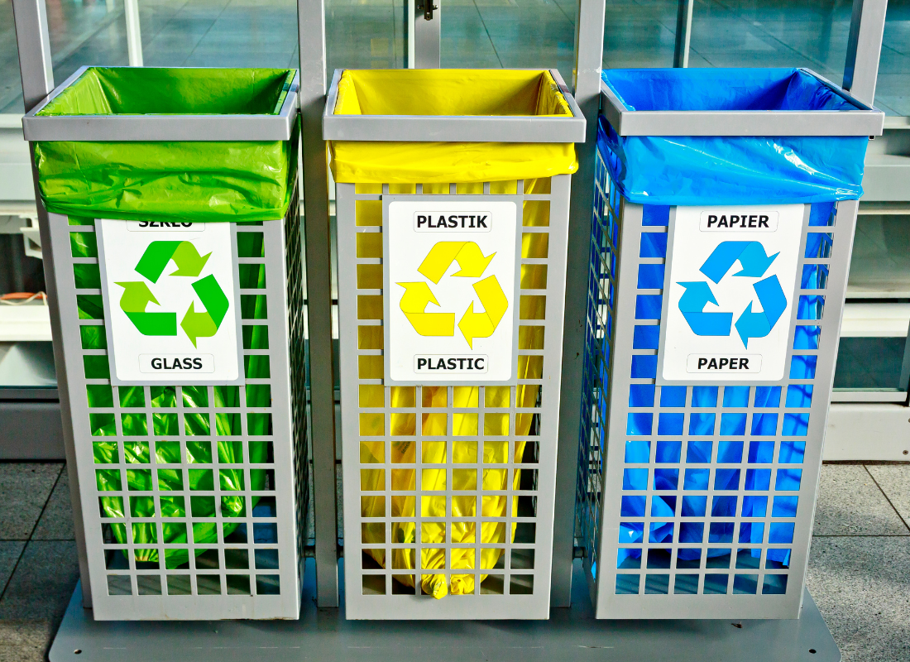

ნარჩენების სორტირების კამპანია
ერთად დავიცვათ ჩვენი პლანეტა ნარჩენების ჭკვიანურად მართვით!
რატომ ვიწყებთ კამპანიას?
ნარჩენების სორტირება უმნიშვნელოვანესი პროცესია ეკოლოგიური ბალანსის შესანარჩუნებლად. ჩვენი კამპანია მიზნად ისახავს საზოგადოების განათლებას და რეალურ ქმედებებს პლასტმასისა და სხვა მასალების გამიჯვნის მიმართულებით.
რა გავაკეთეთ?
- 📦 განათავსეთ სორტირების ურნები სკოლებსა და უნივერსიტეტებში
- 🧑🏫 ჩავატარეთ 20-ზე მეტი სემინარი ეკო-ცნობიერებაზე
- 🌍 შეგროვდა და გადამუშავდა 4 ტონა ნარჩენი
შემოგვიერთდი!
შენც შეგიძლია გახდე ცვლილების ნაწილი — დაიწყე ნარჩენების სორტირება დღესვე!
